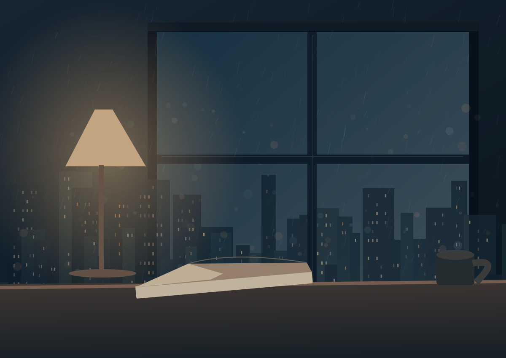
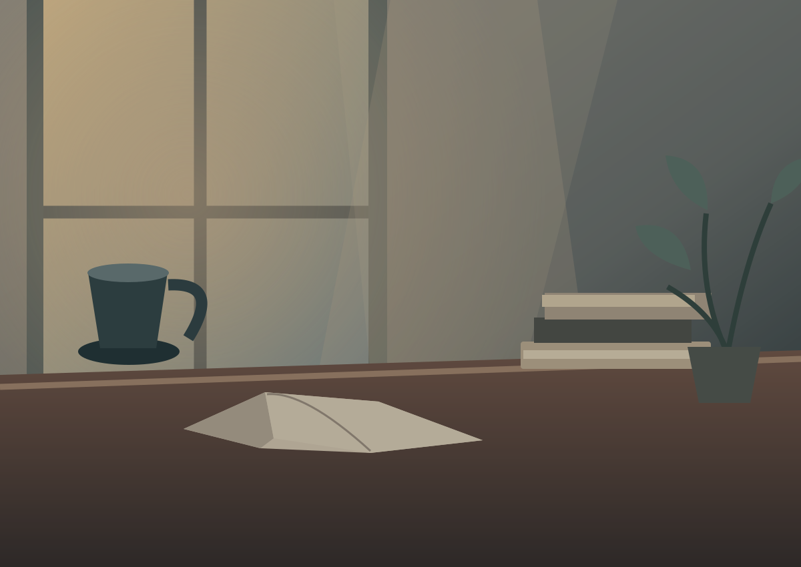

SAKURAI_TK / FICTION ARCHIVE
THE STORIES WE NEVER TOLD
關於未知的我們
Unknown.
我們之間，
那些還沒說出口的事。
BETWEEN WHAT IS KNOWN
AND WHAT REMAINS UNSAID.
✦ THE ARCHIVE / 故事目錄
有些距離，需要用故事丈量。
一段必須循序閱讀的旅程，
與那些散落在日常裡的獨立篇章。

01 / FEATURED SERIAL
CONTINUOUS STORY · 連續劇情
The Distance
Between Us
從第一章開始，循著相同的時間線，
走近那些未曾說出口的心事。

02 / SHORT STORY COLLECTION
STANDALONE STORIES · 獨立短篇
獨立短篇集
不同的時刻，不同的情緒。
每一篇都能從自己的故事開始。
已公開的文章由 Notion 同步；未發布或未勾選網站公開的內容不會顯示。
「 我們都在尋找，一個能夠靠近的理由。 」
SOME DISTANCES ARE MEANT TO BE CROSSED.